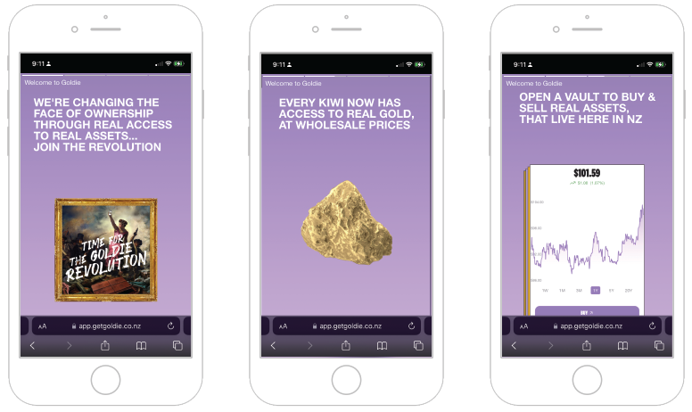
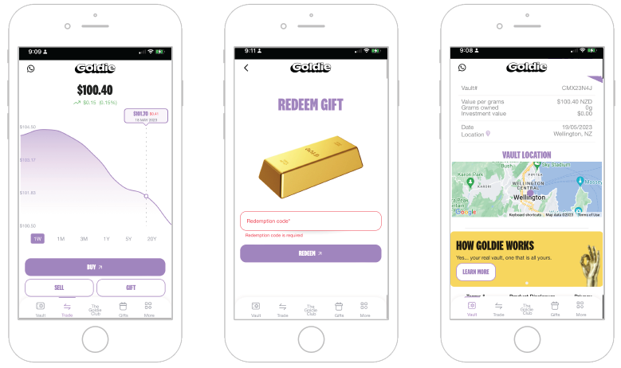
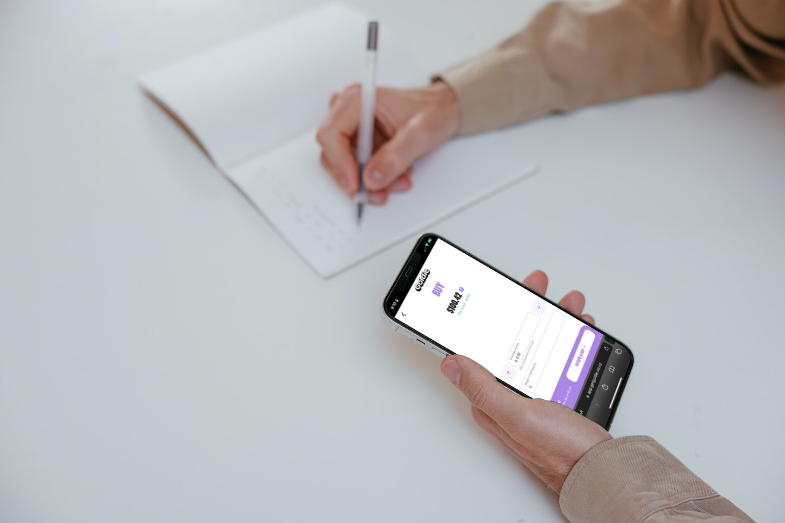

Overview
I collaborated with Goldie, a New Zealand-based commodities start-up company, to develop a UI/UX strategy for their web app. Goldie primarily focuses on trading gold and has ambitions to expand into other commodities, such as artwork and classic cars, in the future. Their mission is to disrupt the market and provide equal investment opportunities to everyday investors, aiming to become the leading alternative investment app in New Zealand.

Objectives
In response to their call for assistance, I formulated a comprehensive UI/UX strategy to support Goldie's goal. It included creating a tailored design system for consistency and efficiency. Additionally, I suggested providing ongoing UI/UX feedback during the design process to refine the user experience.
UI Document
Building upon an existing user survey they had conducted, I recommended conducting user testing to uncover specific pain points and areas for improvement.
Survey Insights

Methodology
In collaborating with Goldie, I employed a strategic methodology that included creating a design system and conducting remote user testing to address the start-up's specific needs and challenges.
Design System
The design system has potential to bring consistency, scalability, and efficiency to their web app's user interface. By establishing a set of standardized design components, patterns, and guidelines, a design system ensures that the visual and interactive elements across the platform are cohesive and aligned with the brands identity. This approach not only saves time and effort in the long run but also promotes a seamless and intuitive user experience by reducing cognitive load and maintaining a familiar interface for users.
Remote User Testing
To gain a deeper understanding of Goldie's customers and their interaction with the web app, I proposed the use of remote user testing. This research method involves observing and gathering feedback from participants as they interact with the platform from their own locations. Remote user testing provides several advantages for a start-up like Goldie:
- - Accessibility: Participants can engage in the testing process regardless of their geographical location, expanding the pool of potential testers and ensuring diverse user perspectives.
- - Cost-effectiveness: Compared to traditional in-person testing, remote user testing eliminates the need for dedicated testing facilities and travel expenses, making it a more cost-effective option for start-ups with limited resources.
- - Convenience: Participants can use their own devices and complete tasks in their natural environments, offering insights into how users engage with the platform in real-world scenarios.
- - Flexibility: Remote user testing allows for a greater number of testing iterations, making it easier to incorporate iterative design improvements based on the feedback received.
By combining a design system with remote user testing, my methodology aimed to create a cohesive, user-centered design for Goldie. The design system ensured consistency and scalability, while remote user testing provided valuable insights into user behaviors, preferences, and pain points. This data-driven approach will enable the team to make effective design decisions and iterate on the platform to meet user expectations.
Next Steps
As a freelancer, I presented the UI/UX strategy to Goldie, showcasing its potential benefits in improving their platform and user satisfaction. I am currently awaiting their decision on whether to engage me in the implementation phase. Through my involvement with Goldie, I aimed to contribute valuable expertise in UI/UX design, helping them refine their web app and create an engaging experience for their users.